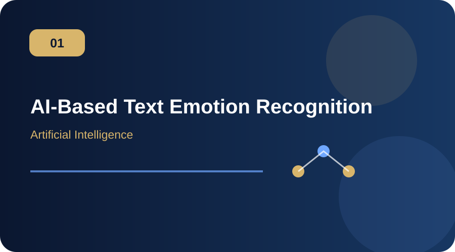
AI-Based Text Emotion Recognition
Detecting emotions from text using machine learning and natural language processing concepts.
Software Engineering graduate and MS Artificial Intelligence candidate with a strong foundation in programming, web development, machine learning and software engineering. Passionate about teaching, mentoring students and connecting theory with practical learning.

A professional academic profile focused on student learning, practical training, software engineering and emerging AI technologies.
Motivated Software Engineering graduate currently pursuing a Master's in Artificial Intelligence. My academic and project experience spans programming, machine learning, databases, web technologies, mobile application development and software engineering.
I am interested in teaching and guiding students in both theoretical and practical domains, with emphasis on clear explanations, hands-on activities and constructive feedback.
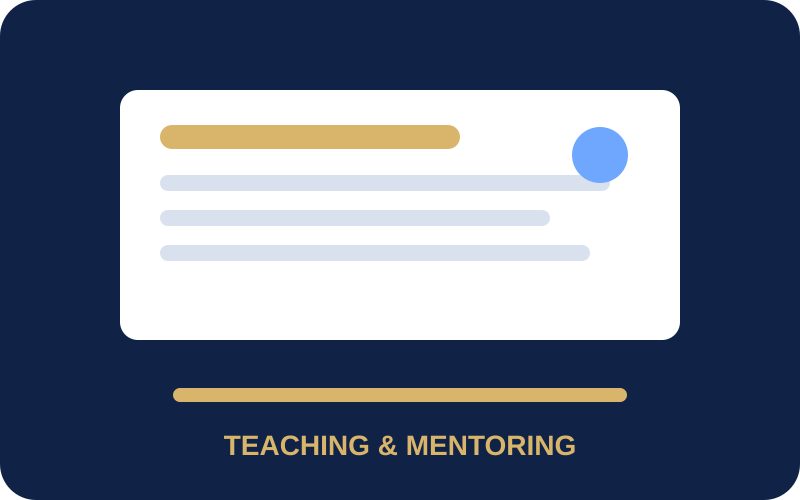
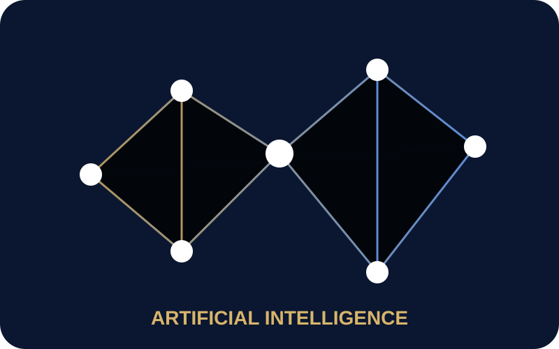
Experience and skills supporting classroom delivery, practical sessions, assessment and student mentoring.
2025–2026
Formal education in artificial intelligence and software engineering.
COMSATS University Islamabad · In progress
COMSATS University Islamabad · CGPA 3.03 / 4.00
Punjab Group of Colleges · 758 / 1100
Private · 836 / 1100
A complete portfolio of academic, AI, software engineering, mobile, web, database and research projects.

Detecting emotions from text using machine learning and natural language processing concepts.
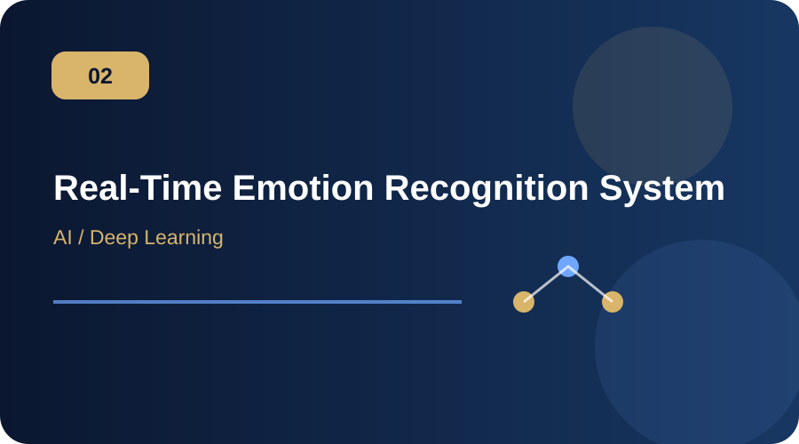
Academic project exploring text and audio emotion recognition with a chat interface.
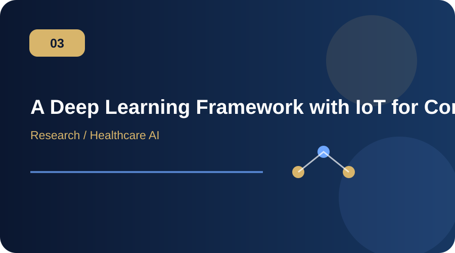
Research-oriented framework for continuous health monitoring and future risk analysis.
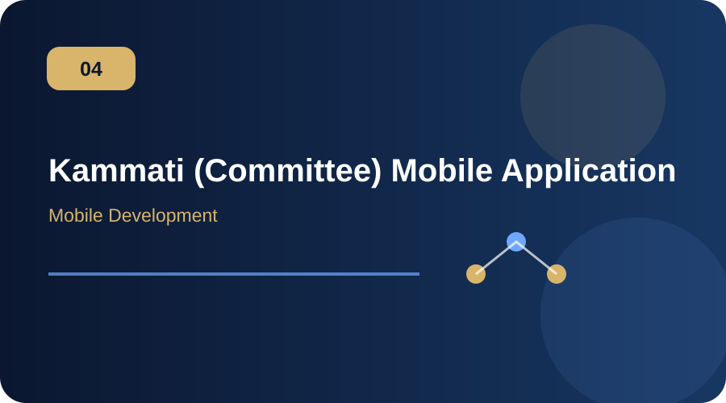
Flutter-based mobile application designed for committee management.
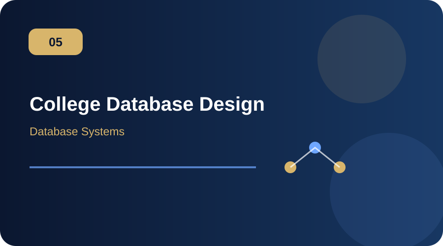
Relational database design for a college management system.
Software project focused on household and home-services management workflows.
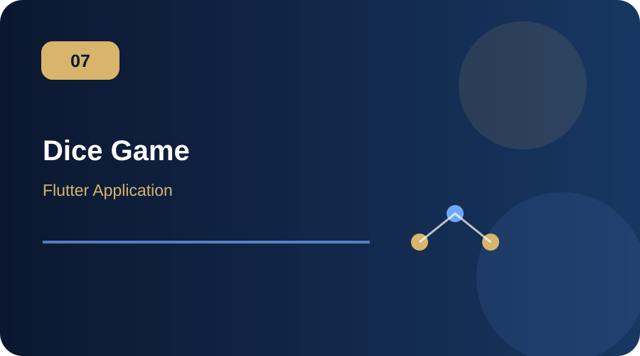
Multi-player dice game with player setup, avatars, target scores and turn-based gameplay.
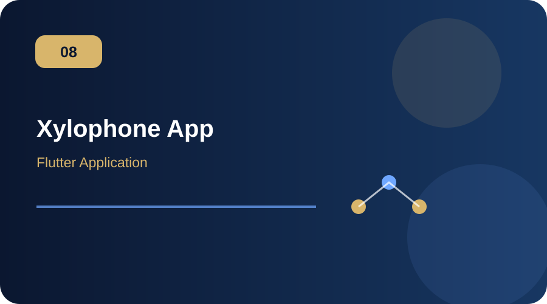
Mobile music application demonstrating interactive audio playback and UI controls.
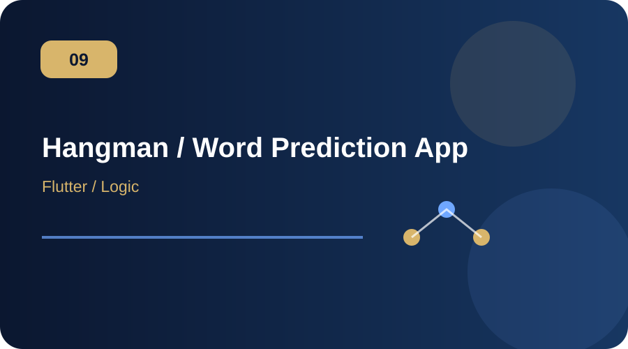
Word-prediction game with configurable word length and attempts.
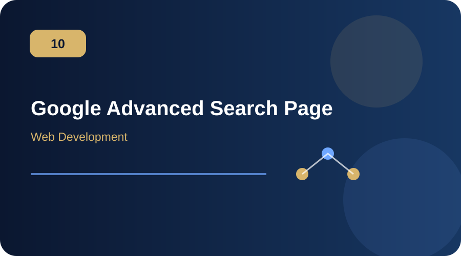
Front-end implementation inspired by an advanced search interface.
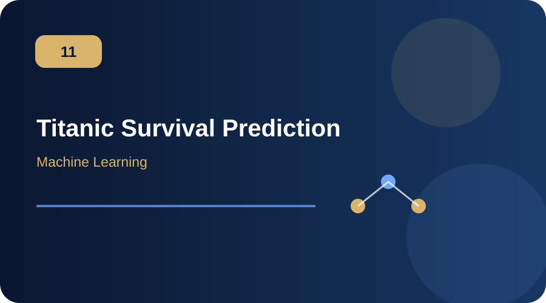
Classification workflow using preprocessing pipelines, feature engineering and model evaluation.
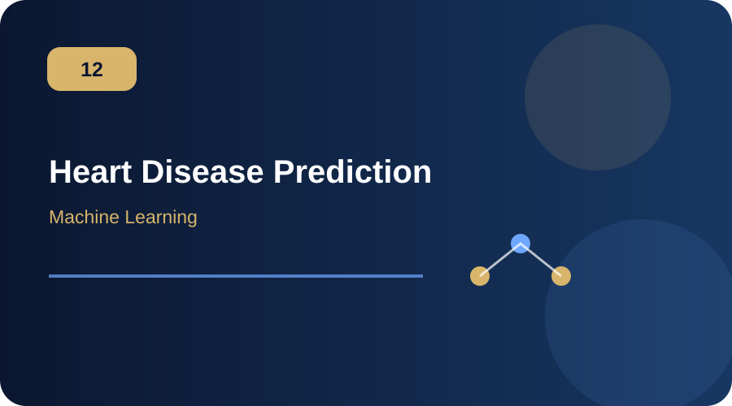
Machine-learning workflow for structured health-indicator classification.
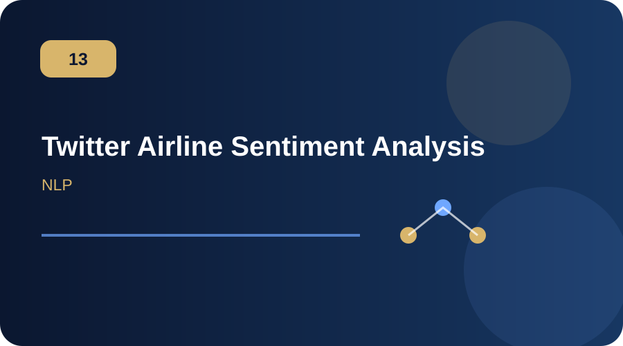
Text classification and sentiment analysis using vectorization and machine-learning approaches.
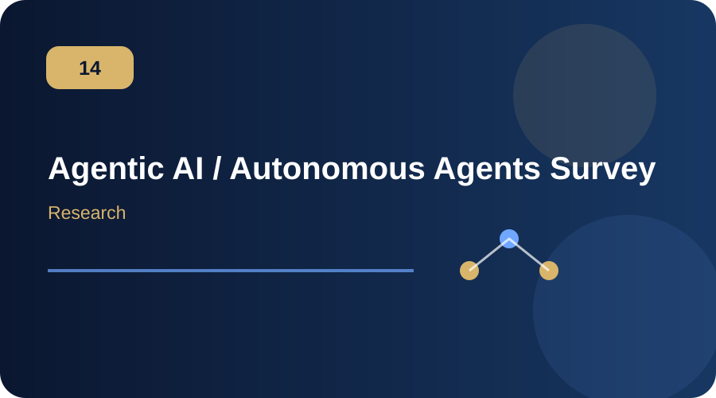
Academic exploration of agent architectures, reinforcement learning, memory and challenges.
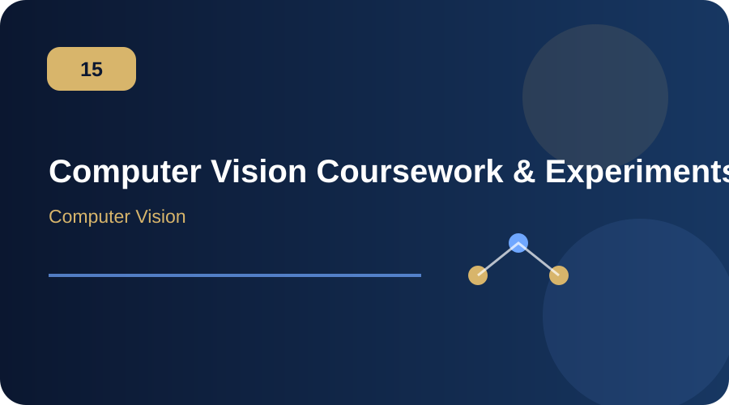
Academic work covering image formation, sampling, features, edges, corners and multiscale representations.
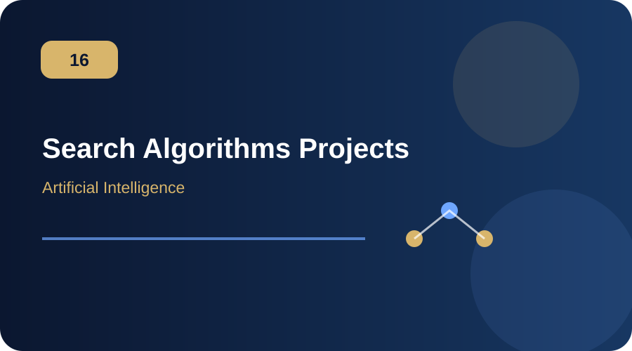
Implementation and study of graph search techniques including BFS, DFS and A*.
Current academic interests connect artificial intelligence with practical software and data-driven applications.
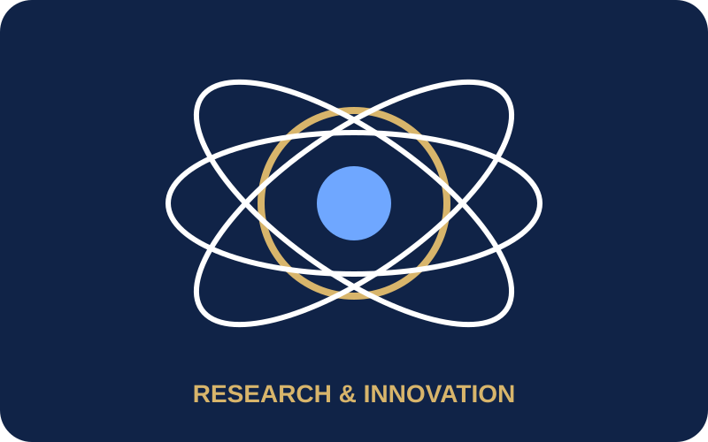
Core areas developed through academic study, projects and teaching.
For teaching, lab instruction, academic collaboration or software/AI opportunities.
Phone
+92 303 7093043